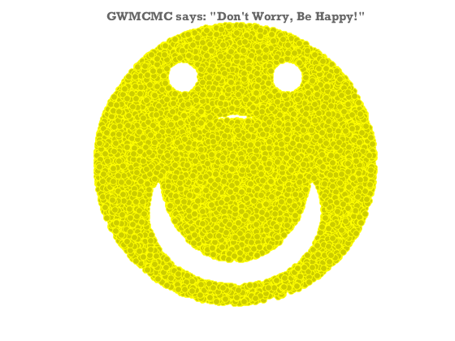

Don't worry, be Happy
Sampling a smiley face likelihood function.
Contents
Smiley face equation
Formulate a likelihood function inspired by an equation of a smiley face.
Source Michael Borcherds: https://twitter.com/mike_geogebra/status/135391208703930369
logHappiness=@(m)1-exp(1e-4*((m(1)^4+2*m(1)^2*m(2)^2-0.3*m(1)^2*m(2)-40.75*m(1)^2+m(2)^4-m(2)^3-40.75*m(2)^2+25*m(2)+393.75)*((m(1)+3)^2+(m(2)-7)^2-1)*((m(1)-3)^2+(m(2)-7)^2-1)*(m(1)^2+(m(2)-2)^2-64)));
Draw samples from the distribution using GWMCMC
Now we apply the MCMC hammer to draw samples from the logHappiness distribution.
[models,logP]=gwmcmc(randn(2,100),logHappiness,100000,'ThinChain',2); models(:,:,1:end*.2)=[]; models=models(:,:)'; plot(models(:,1),models(:,2),'yo','markerfacecolor',[1 1 0]*.8); axis equal off title('GWMCMC says: "Don''t Worry, Be Happy!"');
Important links
Bobby McFerrin on youtube: https://www.youtube.com/watch?v=d-diB65scQU